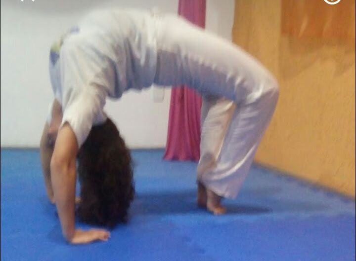
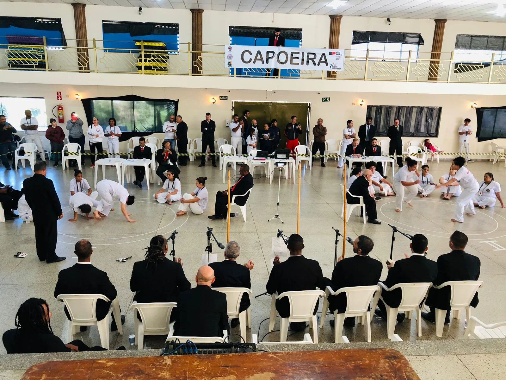
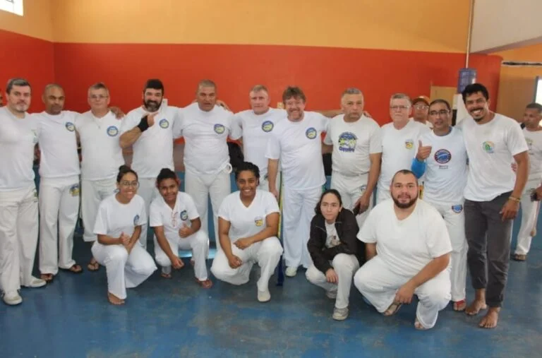

A capoeira está associada ao contexto da escravidão no Brasil, e os primeiros registros históricos são do século XVIII. Os negros africanos escravizados desenvolveram a prática como forma de autodefesa e resistência à opressão dos senhores. Pesquisadores apontam que o início da expressão se deu no período de formação dos quilombos, comunidades de escravizados que fugiam das violências a que eram submetidos. O termo capoeira significa “o mato que nasce depois do desmatamento”. O nome está relacionado à forma como se dava a prática em seu início, realizada nas regiões de mato. O surgimento da expressão ocorreu na zona rural, e somente depois ela chegou aos espaços urbanos. Além da intenção de desenvolver algo como defesa corporal, a capoeira foi criada como mecanismo de resistência cultural, em um processo de manutenção da identidade dos povos africanos que foram submetidos à escravidão.
A capoeira era considerada proibida, pois não era bem-vista pelos senhores. Nesse sentido, as práticas no mato eram formas de manter a expressão viva sem que os proprietários das fazendas descobrissem. As cidades de Salvador, Rio de Janeiro e Recife foram os principais centros urbanos que se tornaram palco da difusão da capoeira. Antônio Moraes da Silva menciona em sua obra Dicionário da Língua Portuguesa, de 1823, que a luta da capoeira havia sido praticada nesse período também por pessoas mestiças e indígenas. A repressão a quem fazia capoeira se estendeu por muito tempo na história brasileira. Após a Proclamação da República, o Código Penal de 1890 incluiu a capoeiragem em ruas e praças públicas como uma prática proibida. Houve também o fenômeno da formação das maltas de capoeira. Elas eram caracterizadas por grupos organizados de pessoas que utilizavam a capoeira para promover desordem com diferentes objetivos, incluindo ações políticas. As autoridades consideravam a modalidade como desordem, violência e baderna. Além das maltas, houve uma perseguição racista contra a capoeira que se uniu ao processo de repressão contra outras manifestações, como o candomblé e o samba. Já no século XIX, em sua primeira metade, a capoeira passou a ser praticada por outros grupos, tais como escravizados libertos, militares, portugueses, imigrantes europeus e membros da elite social.]
A esportivização da capoeira enquanto luta brasileira foi impulsionada pelas obras O Guia do Capoeira ou Ginástica Brasileira (1907) e Ginástica Nacional (Capoeiragem): metodizada e regrada (1928). Tendo permanecido como uma prática proibida por muito tempo, a legalização da capoeira ocorreu na década de 1930.

Bem-vindos ao aulasdecapoeira.com , o seu portal para o fascinante mundo da capoeira da ACADEMIA NACIONAL - MESTRE TONINHO!... (texto completo fornecido)

Calça de Capoeira

Camisa de Capoeira

Berimbau



Salão de Artes Marciais - R.Dr Américo Figueiredo,1939 - Zona Oeste, Sorocaba, São Paulo, CEP:18055132 (pavimento superior do Posto Manchester)